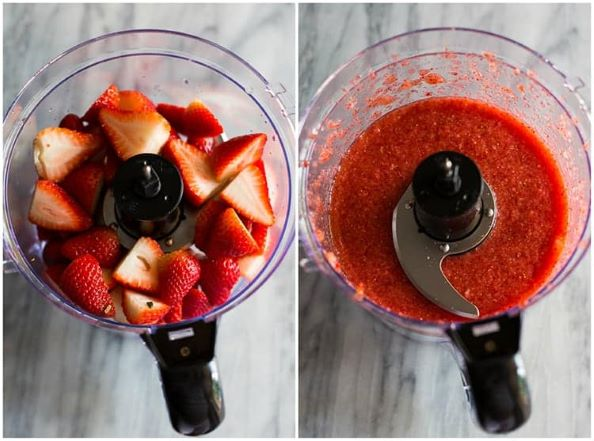

Puree the strawberries. Use a blender or food processor to puree the strawberries. Strain them through a fine mesh sieve to remove seeds, if you want.

Make a simple syrup. Add sugar and 2 cups of water to a saucepan. Bring to a simmer and stir until sugar is dissolved. Remove from heat and cool to room temperature.
Juice your lemons. Strain the lemon juice through a fine mesh sieve into a pitcher.
Combine syrup, lemon juice, and pureed strawberries. Stir to combine.